Joenio Costa
http://joenio.me
LaTeX
O LaTeX é uma linguagem de marcação e um ambiente para diagramação de textos utilizado amplamente na produção de textos matemáticos e científicos devido a sua alta qualidade tipográfica
http://latex-project.org
LaTeX
LaTeX
Exemplo 1
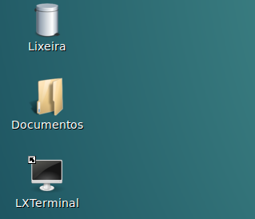
Criar nova pasta
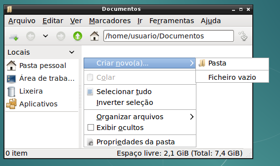
Digite: exemplo1
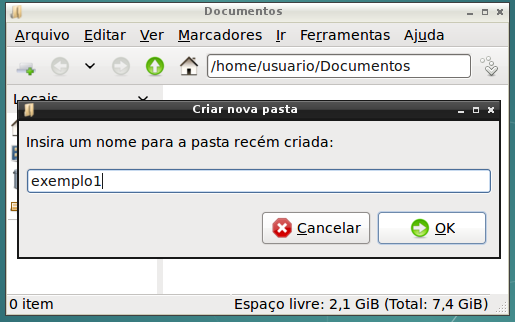
Pasta exemplo1 criada
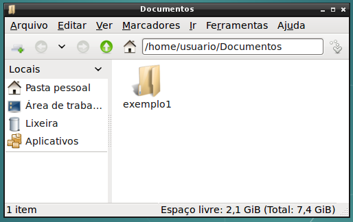
Abra a pasta e crie novo arquivo
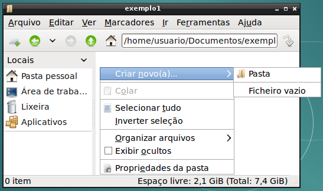
Digite: artigo1.tex
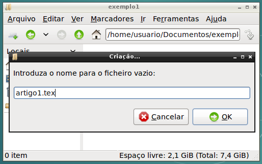
Arquivo artigo1.tex criado
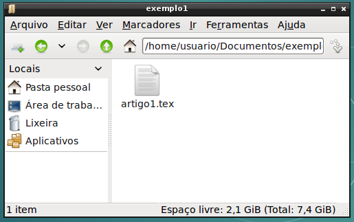
Abra o arquivo artigo1.tex
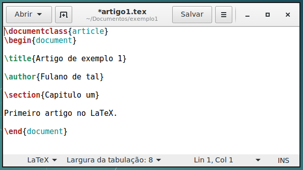
Crie novo arquivo: Makefile
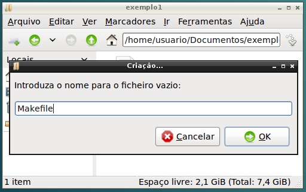
Abra o arquivo Makefile
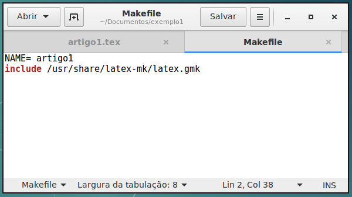
Salve, feche os arquivos,
e abra o terminal
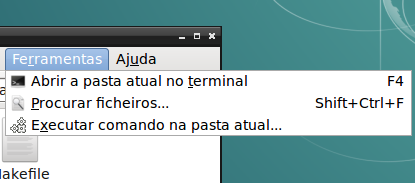
Digite o comando make no terminal
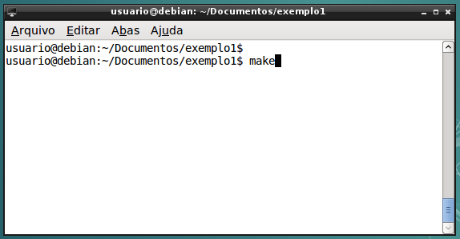
Modifique o arquivo Makefile
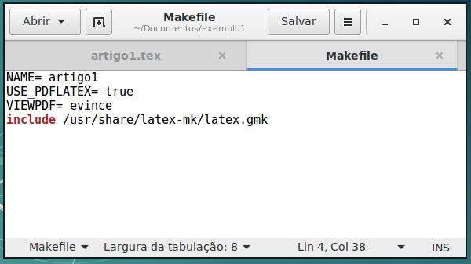
LaTeX
Exemplo 2
Criar nova pasta
Digite: exemplo2
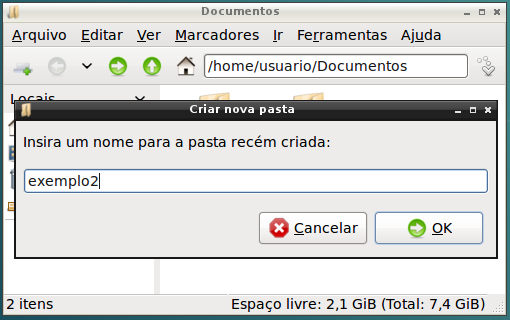
Pasta exemplo2 criada
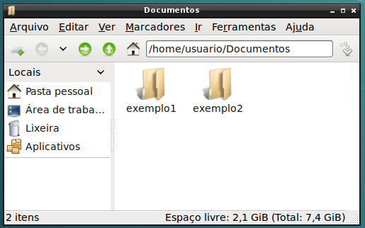
Abra a pasta e crie novo arquivo
Digite: artigo2.tex
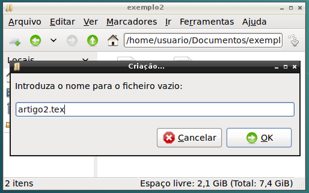
Arquivo artigo2.tex criado
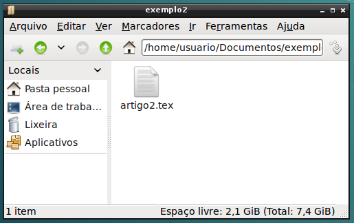
Abra o arquivo artigo2.tex
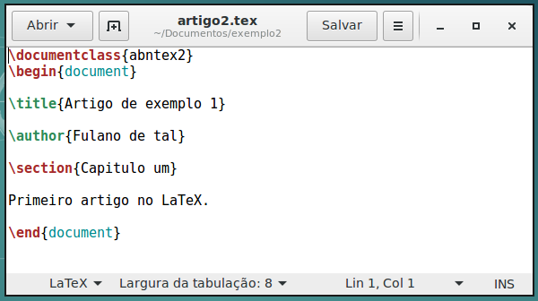
Crie novo arquivo: Makefile
Abra o arquivo Makefile
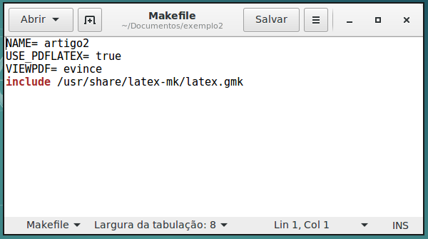
Salve, feche os arquivos,
e abra o terminal
Digite o comando make no terminal
LaTeX e normas ABNT
Pacote abnTeX2
O LaTeX tem a capacidade de formatar o documento final seguindo normas de formatação específicas através de classes, para as normas ABNT utiliza-se a suíte abnTeX2
http://www.abntex.net.br
GNU make e Makefiles
Make é uma ferramenta para automatizar a compilação e construção de programas
http://www.gnu.org/software/make
LaTeX
Regras de formatação
LaTeX e BibLaTeX
Referências bibliográficas
style=”font-size: 36px”>
liographystyle{ieeetr}
m ipsum\cite{Mafra2006}
liography{bibliografia} e>
R Project
R Project
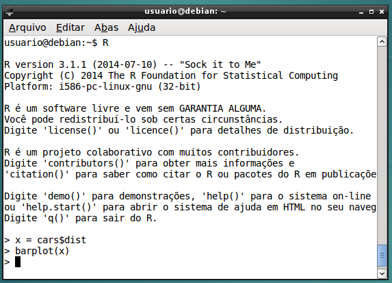
R Project
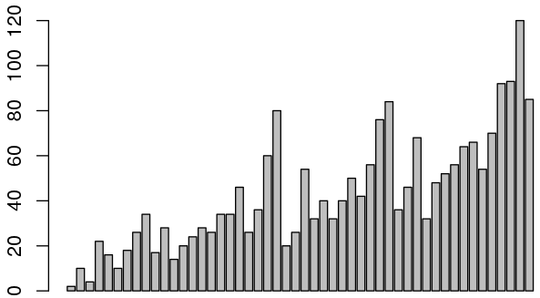
knitr: R Project + LaTeX
Exemplo 3
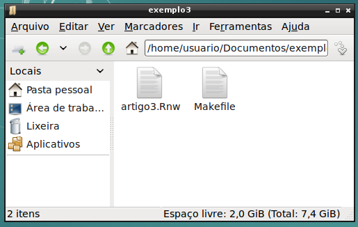
knitr: R Project + LaTeX
Arquivo exemplo3.Rnw
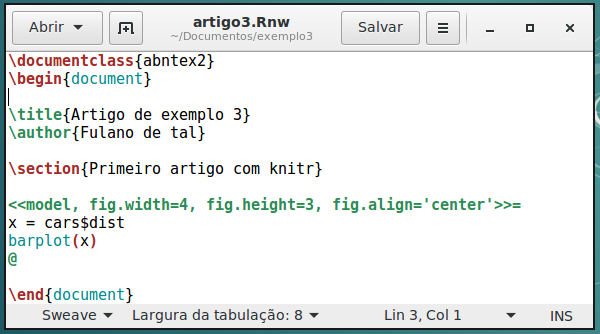
knitr: R Project + LaTeX
Makefile
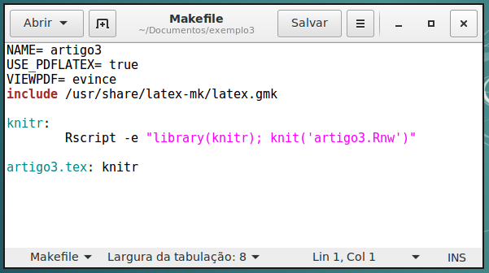
Obrigado!
esta apresentação foi feita com o software livre impress.js